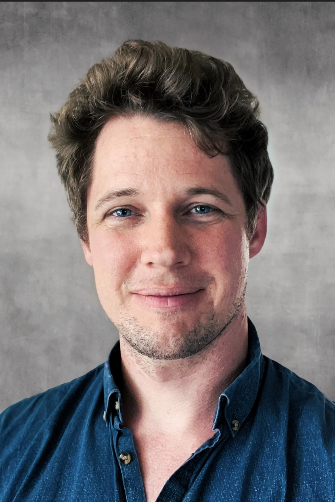
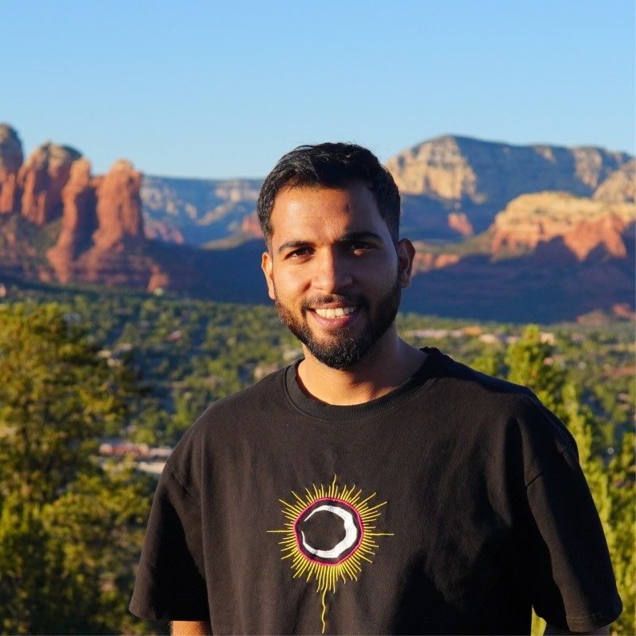
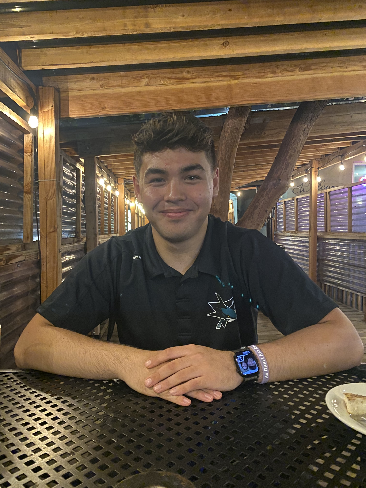

The researchers driving innovation in power electronics at UCSC.

Nathan M. Ellis [Senior Member, IEEE] is currently an Assistant Professor within the Department of Electrical and Computer Engineering at the University of California, Santa Cruz. From 2020 to 2024, he was a Postdoctoral Researcher in the Department of Electrical Engineering and Computer Sciences at the University of California, Berkeley. He received the B.S. degree in EE from the University College Cork, Ireland, in 2013, and the M.S. and Ph.D degrees in ECE from the University of California, Davis, in 2017 and 2020, respectively. He conducts research in the area of power electronics, with interests in circuit topologies, modeling and control, mixed-signal integrated circuit design, and high-performance hardware. His work has been applied to data-center power delivery, satellite systems, renewable-energy technologies, biomedical devices, and electric vehicles. He has authored more than 40 journal and conference publications, holds four U.S. patents, and has coauthored two IEEE prize papers. Dr. Ellis received UC Davis’ Industrial Affiliates Best Graduate Researcher Award in 2017, the Analog Devices Outstanding Student Designer Award at the International Solid-State Circuits Conference in 2020, recognition for “Instructor Teaching Effectiveness that greatly exceeds the Departmental average” at the University of California, Berkeley in 2021, and the Best Technical Lecturer Award at the IEEE Applied Power Electronics Conference in both 2021 and 2024.

Swapnil Tripathi is a PhD student in Power Electronics. He received his M.S. in Power Systems & Electronics from the Indian Institute of Technology (IIT) Madras and B.Tech. in Electrical Engineering from MITS Gwalior. His research focuses on high-frequency hybrid switched-capacitor DC–DC converters, soft-switching techniques, and compact power electronics hardware for high power-density applications. He has authored IEEE conference papers at ECCE 2024 and IECON 2024 on multilevel inverter control and presented his work at IEEE ECCE 2024 in Phoenix, Arizona.
Mitchell McDowell received his B.S. degree in Electrical Engineering from Saginaw Valley State University in 2024. Before joining Ellis Power Group in 2025, he worked as an Associate Electrical Engineer at Northrop Grumman. He is currently pursuing a Ph.D. in electrical engineering at the University of California, Santa Cruz. His research focuses on the design and control of hybrid switched-capacitor converters, with an emphasis on improving converter stability, power density, and efficiency.
[Placeholder: Research focus, year started, B.S. institution.]
[Placeholder: Major, year, project they're working on.]
Nicholas is working towards his B.S. in Computer Science. He is now working on a minimal breakout board for TI's C2000 microcontroller.
[Placeholder: Major, year, project they're working on.]

Svante Aretun is an alumnus of the Ellis Power Group and a graduate of UC Santa Cruz, where he earned his B.S. in Computer Engineering with a concentration in Systems Programming. In the Ellis Power Group, he worked on embedded C firmware for TI C2000 microcontrollers and PCB design for C2000-based control circuitry. He is currently pursuing an M.S. in Computer Science at UC San Diego, with a focus on computer systems.